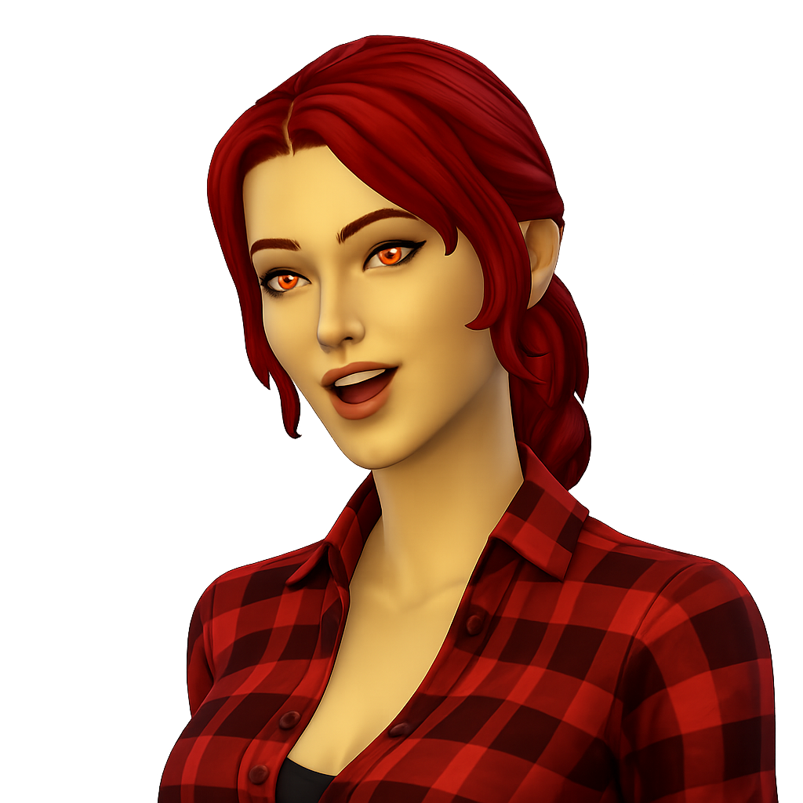

Ein Türchen zum Mitspielen

Lilly rückt den Klavierhocker zurecht und sieht dich an. „Kennst du das hier? Spiel mit mir — ich zeig dir die Noten, du triffst die Tasten. Und hör gut hin. Der Name des Stücks könnte noch wichtig werden."
Klicke die Tasten wenn die Note sie erreicht — oder nutze die Tastatur: A S D F G H J K für die weissen, W E T Z U für die schwarzen Tasten.